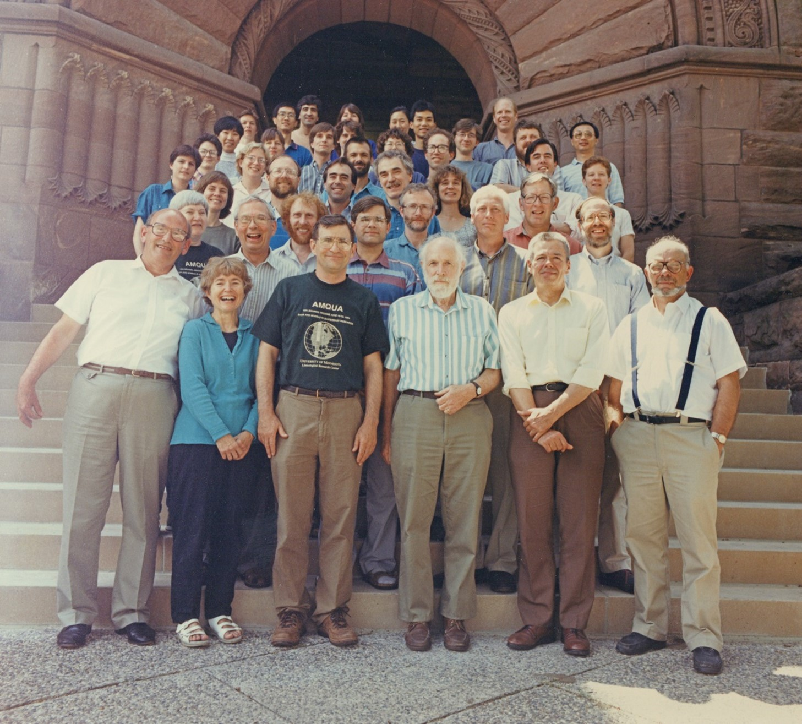
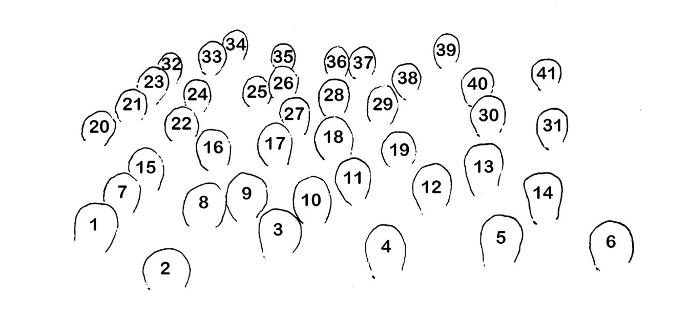

Historical Notes on the Limnological Research Center
by H.E. Wright
The incentive for these notes comes from the initiative of Geoff Seltzer to assemble as many of the LRC alumni and alumnae as could be found on short notice for a photograph on the steps of Pillsbury Hall on the occasion of the American Quaternary Association meeting in June (1994). Everyone was arrayed chronologically on the steps, and a list was compiled with names and periods of tenure. I thought it would be interesting to provide some notes to supplement the bare chronology, and to add the names of those graduate students and post-docs in or near the LRC _who frequented Pillsbury Hall and who are not represented in the photograph. The LRC was preceded by the pollen laboratory, initiated in 1956 by a grant from the Hill Family Foundation. In 1963 the LRC was established by a separate grant from the Hill Family Foundation, and the pollen laboratory was incorporated within it. The pollen laboratory revolved in successive years around the year-long visits of experienced paleoecologists from European laboratories, starting with Magnus Fries from Sweden and followed by Saskia Jelgersma from The Netherlands, Willem van Zeist from The Netherlands, Bill Watts from Ireland, Roel Janssen from The Netherlands, Maj-Britt Florin from Sweden, Krystyna Wasylikowa and Kazik Wasylik from Poland, Johanna and Eberhard Grüger from Germany, Elizabeth Haworth from England, John and Hilary Birks from England, and (in later years) Rick Battarbee from England, Svante Björck from Sweden, and Jan Janssens from Belgium via Canada. Several of these persons returned in subsequent years, notably Bill Watts, Roel Janssen, John Birks, and Svante Björck. Foreign visitors for several months included Richard West and Kevin Edwards (England), Jan Mangerud (Norway), Norio Fuji (Japan), and Alojz Sercelj (Yugoslavia). On the neolimnological side Gunilla Lindmark came from Sweden and Dragica Matulova from Czechoslovakia. This foreign flavor was supplemented by students from Ireland (Alan Craig, Norman Allott, Henry Lamb, Joan Lennon, Roger Dutton), Japan (Junko Ogawa), Finland (Liisa Koivo), Canada (Vern Rampton), Sweden (Kerstin Griffin, Elisabeth Almgren, Karin Ahlberg), The Netherlands (Rik Jansen), and Belgium (Dirk Verschuren). In the last few years with the coming of Kerry Kelts from Switzerland the foreign contingent has included post-docs from Spain (Bias ValeroGarces), Germany (Antje Schwalb), France (Babette Truze), and Canada (Brian Cumming), as well as students from China (Juanjuan Xia, Jun-Qing Yu, Zhigang Gong, Yue Han). Non-foreign post-docs have included Ed Cushing, Bob Megard, Linda Shane, Paul Glaser, Dan Engstrom, Sheri Fritz, John Bradbury, Mel Whiteside, Dick Brugam, Tom Crisman, John Kingston, Brian Haskell, and Michael Rosen. Jean Waddington managed the pollen laboratory for many years before Linda Shane. Tom Johnson of the Geology faculty was closely affiliated with the LRC just before moving to Duluth, and Emi Ito has recently become an active member. Of course, many others were associated with the LRC over the years, such as technicians, secretaries, and undergraduate helpers, and many of these were critical for the social ambience. In the following list the numbers before the names are keyed to the photograph. The dates were provided by those present or were extracted from annual reports of the LRC or other sources. Current locations are given where known. Any corrections and up-dating would be appreciated.
20 August 1994
Pollen Laboratory and Limnological Research Center 1956-1994
H.E. Wright 1956 to present (deceased)
Ed Cushing 1956 to present – Ecology Dept., Univ. Minnesota
Jock McAndrews 1957-63 – Royal Ontario Museum, Toronto (deceased)
Magnus Fries 1958-59 (deceased)
Harvey Patten 1958-61 – Covington, LA.
Tom Winter 1958-62 – U.S. Geological Survey, Denver (deceased)
Lou Maher 1958-61 – Geology Dept., Univ. Wisconsin (deceased)
Anne McKnight Bent 1958-61 – Raleigh, North Carolina
Bob Bright 1958-63 – Ecology Dept., Univ. Minn. (deceased)
Saskia Jelgersma 1959-60 – Geological Survey of The Netherlands (deceased)
Dick Baker 1960-64 – Geology Dept., Univ. Iowa
Willem van Zeist 1960-61 – Inst. Biol. Archaeology, Groningen, The Netherlands (deceased)
Richard West 1960 – Botany School, Cambridge Univ. (deceased)
Bill Watts 1961 to present – Botany Dept., Trinity College, Dublin (deceased)
Barbara Hansen 1961 to present – Stillwater, Minn.
Red Watson 1961-63 – Washington Univ., St. Louis
Roel Janssen 1962-64 – Lab. Palaeobotany, Univ. Utrecht, The Netherlands (deceased)
Tom Shay 1962-70 – Dept. Anthropology, Univ. Manitoba (now at Welton, Brough, E. Yorks., UK)
Bob Megard 1962-66 – Ecology Dept., Univ. Minn. (deceased)
Kerstin Olson Griffin 1963-68 – Museum of Archaeology, Stavanger, Norway
Henry Quade 1963-65 – Dept. Biology, Mankato State Univ., Minnesota
Joe Shapiro 1964 to present
Maj-Britt Florin 1964-65 (deceased)
Vern Rampton 1964-69 – Terrain Analysis and Mapping Services, Carp, Ontario
Krystyna Wasylikowa 1964-65 – Polish Acad. Sci.,
Krakow Kazik Wasylik 1965 – Jagiellonian Univ., Krakow, Poland (deceased)
Alan Jacobs 1965 – Pittsburgh
Jean Waddington 1965-74 – Minneapolis
Elizabeth Haworth 1966-67 – Freshwater Biol. Assoc., Ambleside, England Donna Stark 1966-71 – Lakeland, Florida Jim Yanko 1966 – Chicago
Bob Carlson 1966-72 – Biology Department, Kentucky State Univ., Kentucky, Ohio
Johanna Grüger 1967-69 – Göttingen, Germany
Junko Ogawa 1967 – Kyoto, Japan
Liisa Koivo 1967-70 – Univ. Tampere, Finland
Eberhard Grüger 1968-69 – Inst. Palynology, Univ. Göttingen, Germany
Alan Craig 1968 – National Parks and Monuments, Dublin, Ireland
Mel Whiteside 1968 – Biology Dept., Univ. Minn. Duluth
Al Swain 1968-72 – Madison, Wisconsin
David Adam 1968 – U.S. Geol. Survey, Menlo Park, California
Steve Tarapchak 1968-73
Judy Barrett 1968-69 – Fond du Lac, Wisconsin
Steve Anthony 1968-71 – Minneapolis
John Platt Bradbury 1968-73 – U.S. Geological Survey, Denver (deceased)
Paul Glaser 1968 to present
Gail Garrison 1968-70
Donna Amundson 1969-74 – MD, Minneapolis
Chris Synerholm 1969-72 – California
Fletcher Driscoll 1969-75 – Geraghty and Miller, Minneapolis
Dragica Matulova 1969-70 – Prague
Kay Baker 1970-73 Rocky Colingsworth 1970-72
Dick Wright 1970-74 – Norwegian Inst. Water Research, Oslo, Norway
John Birks 1970 (+ intermittently 1971-82) – Botanical Institute, Univ. Bergen, Norway (now Dept. Biological Sceinces, Univ. Bergen, Norway)
Hilary Birks 1970 – Botanical Institute, Univ. Bergen, Norway (now Dept. Biological Sceinces, Univ. Bergen, Norway)
Mark Mantuani 1970-71
Nancy Sather 1970-74 – Natural Heritage Program, Minn. Dept. Nat. Res.
Paula Mellott 1971-73 – Butler, Pennsylvania.
Vince Lamarra 1970-75 – Logan, Utah
David C. Foster 1971-74 – Minn. Dept. Health
George Jacobson 1971-75 – Quaternary Research Institute, Univ. Marine, Orono
Jan Mangerud 1972 – Geological Institute, Univ. Bergen, Norway (now Dept. Earth Science, Univ. Bergen, Norway)
Mike Lynch 1972-77 – Univ. Oregon,
Eugene Greg Lie 1973-77 – Hennepin County
Mark Saporito 1973-75
Mary Rutter 1973-75
Nancy Eyster-Smith 1973-79 – Dept. Natural Sciences, Bentley College, Waltham, Mass
Roxanne Martin 1973-75
Greg Lie 1973-77
Mark Sheehan 1974
Hazel Delcourt 1974-78 – Program in Ecology, Univ. Tennessee, Knoxville
Paul Delcourt 1974-78 – Dept. Geology, Univ. Tennessee, Knoxville
Bruce Forsberg 1975-80 – Manaus, Brazil
Dick Brugam 1975-78 – Dept. Biology, Southern Illinois Univ., Edwardsville
Tom Crisman 1975-77 – Dept. Environmental Engineering, Univ. Florida, Gainesville
Barbara Speziale 1975 Norio Fuji 1975
Eric Grimm 1975 – Illinois State Museum, Springfield (deceased)
Norman Allott 1976-78 – Botany Dept., Trinity College, Dublin, Ireland
Henry Lamb 1976-78 – Institute of Earth Sciences, Univ. College, Aberystwyth, Wales
Gunilla Lindmark 1976-77 Val Smith 1976-82 – Univ. Kansas, Lawrence
Barry Goldstein 1976-78 – Dept. Geology, University of Puget Sound, Tacoma, WA J
ohn Almendinger 1976-85 – U.S. Forest Service, Deer River, Minn.
John King 1976-80 – School of Oceanography, Kingston, R.I.
Ed Swain 1977-84 – Minn. Pollution Control Agency
Linda Shane 1978 to present
Dan Engstrom 1978 to present – Science Museum of Minnesota
Sheri Fritz 1978-94 – Dept. Geology, Lehigh Univ., Bethlehem, PA (now at Univ. Nebraska, Lincoln)
Eric Smeltzer 1978-80 – Vermont
David R. Foster 1978-83 – Harvard Forest, Harvard Univ., Petersham, Mass.
Jim Almendinger 1978-88 – U.S.G.S., Roseville, Minn. (now at Science Museum of Minnesota)
Nancy Radle 1978-81 – Minn. Dept. Transportation, St. Paul
George King 1979-87 – E.P.A. Environmental Sciences, Corvallis, Oregon
Dave Wright 1979-88 – Minnesota Dept. Nat. Resources
John Halfman 1980-82 – Dept. Geology, Notre Dame Univ.
Kerry Keen 1980-83 – Summit Environmental Services, Minneapolis
Dora Barlaz 1980-82 – New York City
John Kingston 1980-82 – Memorial Univ., Newfoundland (deceased)
George Zoto 1980
Jan Janssens 1980-1989 – Ecology Dept., Univ. Minnesota
Cathy Whitlock 1981 – Dept. Geography, Univ. Oregon, Eugene (now at Montana State University, Bozeman)
Kristine Bradof 1981-85
Rick Battarbee 1981-82 – Dept. Geography, University College London, England
Svante Björck 1981-82 – Geological Institute, Univ. Copenhagen, Denmark (deceased)
Amy Loiselle 1981-84 – Div. Waters, Minn. Dept., Nat. Resources Scott Murchie 1981-84
Pietra Gardetto-Mueller 1981-86 – Illinois State Museum, Springfield
Kevin Edwards 1982 – Dept. Geography, Univ. Birmingham (now at University of Aberdeen, Scotland)
George Ganf 1982 – Univ. Adelaide, Australia
Geoff Seltzer 1982-90 – Dept. Geology, Syracuse Univ., NY (deceased)
Jim Clark 1984-88 – Dept. Botany, Duke Univ., Durham, NC
Liz Almgren 1984-88 – Inst. Quaternary Geology, Univ. Goteborg, Sweden
Jeather Almquist-Jacobson 1984-86 – Botany Dept., Univ. Maine, Orono
Joan Lennon 1984-86 Bill Lamberts 1985 to present
Jeff Groen 1986-90
Amy Ollendorf 1987-93 – Minnesota Historical Society, St. Paul
Sharon Locke 1987-94 – Dept. Geology, Univ. Minn., Duluth
Roger Dutton 1987
Juanjuan Xia 1987 to present
Virginia Card 1988-94 – Dept. Biology, Macalester College, St. Paul, Minn
Karin Ahlberg 1989 to present
Katrine Allen Kennedy 1989-91
Kate Laird 1990 to present
Dirk Verschuren 1990 to present
Ingemar Renberg 1991 – Umea Univ., Sweden
Kerry Kelts 1991 to present (deceased)
Emo Ito 1991 to present
Brian Haskell 1991 to present
Blas Valero-Garces 1991 to present
Lora Stevens 1991 to present
Yue Han 1991 to present
Dave Olson 1991-94 – Med. School, Univ. Minn.
Jun-Qing Yu 1991 to present
Kristina Miller 1991 to present
Babette Truze 1991-93
Shannon Lotthammer 1992-93
Zhigang (Eric) Gong 1992 to present
Michael Rosen 1992-93 – Wairakei Research Centre, Taupo, New Zealand
Charlie Tiller 1992 to present
Elena Litchman 1992 to present
Mark Abbott 1992 to present
Becky Teed 1992 to present
Antje Schwalb 1993 to present
Brian Cumming 1993-94 – Queen’s Univ., Kingston, Ontario, Canada
Rik Jansen 1993 – University of Utrecht, The Netherlands


- Bill Watts
- Barbara Hansen
- Dick Baker
- Herb Wright
- Ed Cushing
- Jock McAndrews
- Linda Shane
- Tom Shay
- Barry Goldstein
- Eric Grimm
- Henry Lamb
- George Jacobson
- Dick Brugam
- Paul Glaser
- Cathy Whitlock
- George King
- Jim Almendinger
- Dan Engstrom
- Sheri Fritz
- Pietra Gardetto-Mueller
- Virginia Card
- Heather Almquist-Jacobson
- Juanjuan Xia
- Karin Ahlberg
- Brian Haskell
- Becky Teed
- Jim Clark
- Lora Stevens
- Geoff Seltzer
- David R. Foster
- Amy Ollendorf
- Kate Laird
- Yue Han
- Blas Valero-Garces
- Sharon Locke
- Emi Ito
- Zhigang Gong
- Dirk Verschuren
- Brian Cumming
- John Halfman
- Jun-Qing Yu